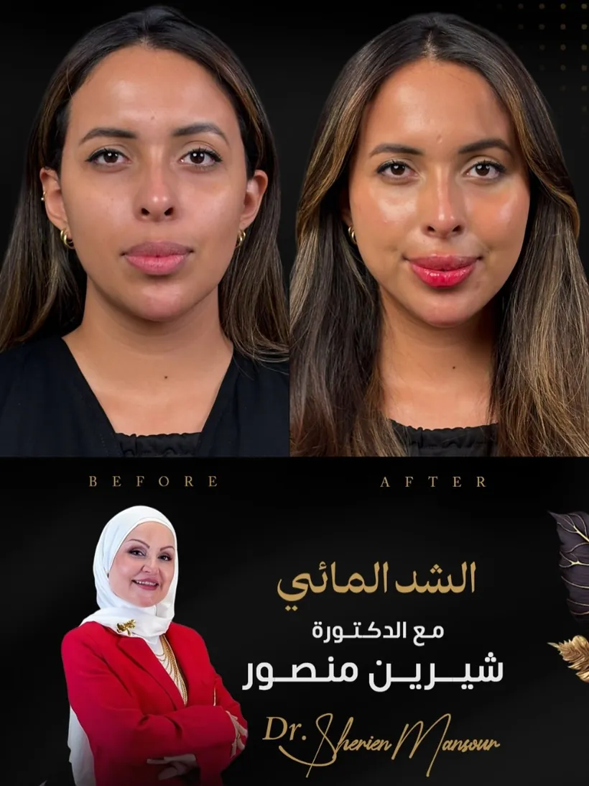
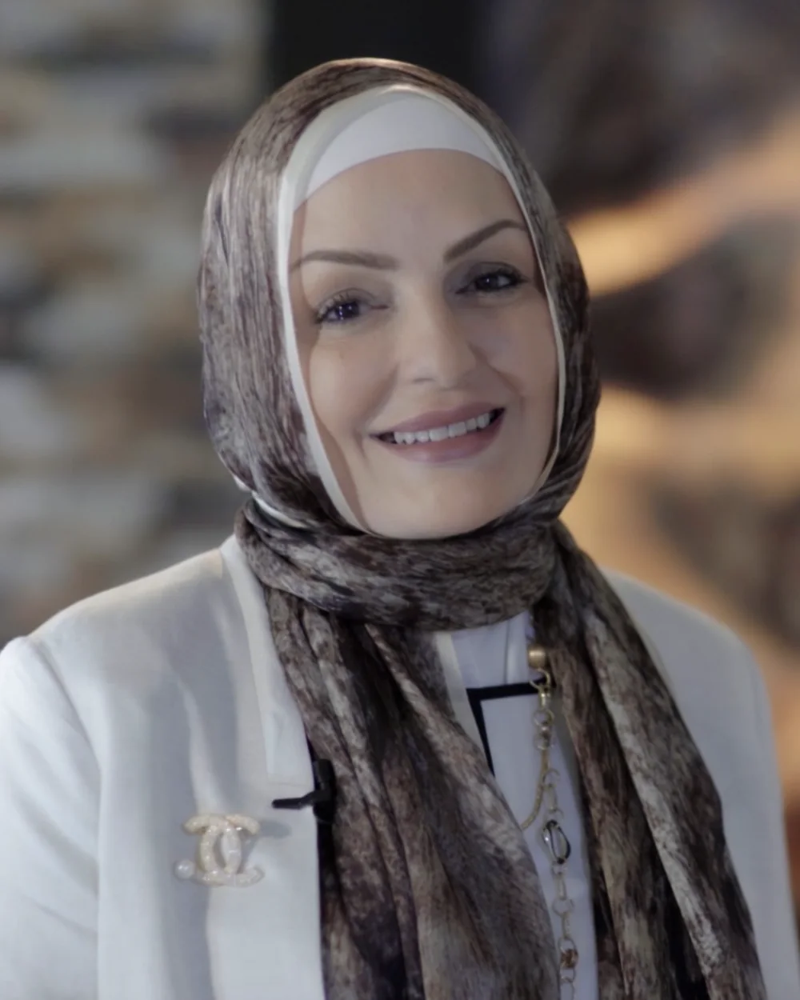
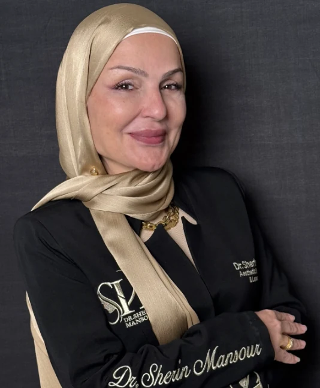
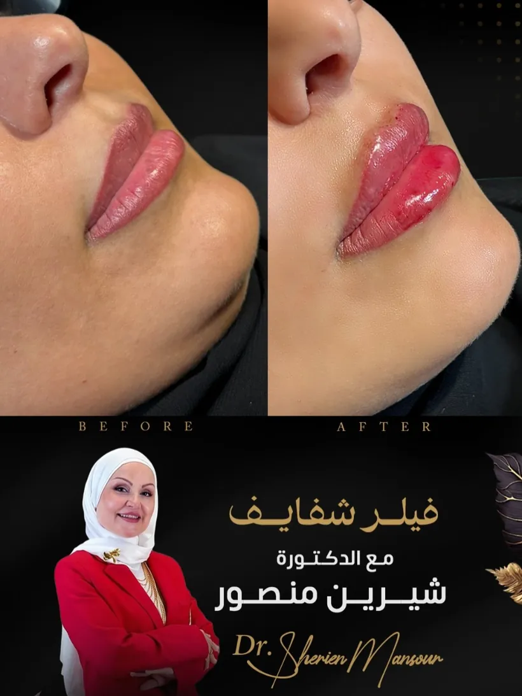
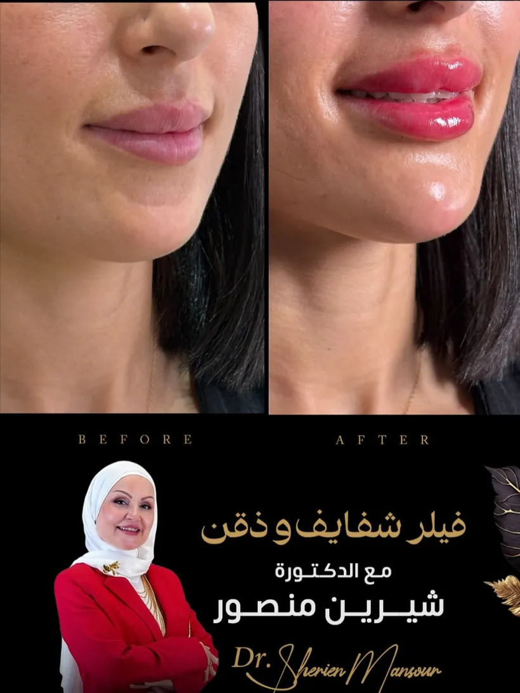
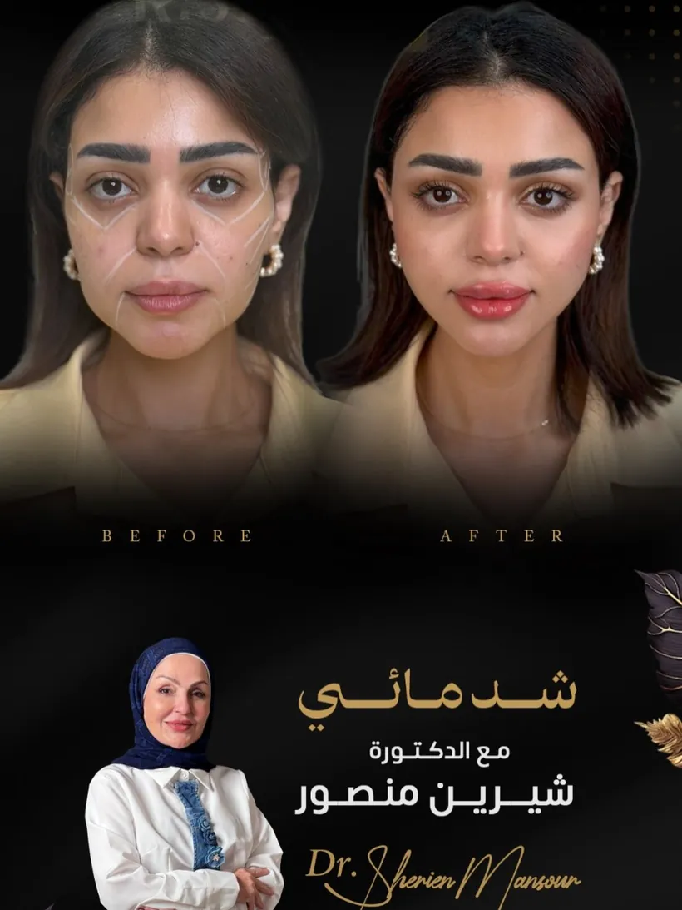

face-before-after.webpأكثر من 25 عاماً من الخبرة في الجلدية والطب التجميلي والليزر في الرياض بالمملكة العربية السعودية ومصر. نقدّم لكِ رعاية طبية فاخرة ونتائج طبيعية بثقة عالمية.

صورة الدكتورةنركّز على أربعة علاجات أساسية تمنحكِ نتائج طبيعية وآمنة — بخبرة تتجاوز ربع قرن في الطب التجميلي.
نعيد تعريف ملامح الوجه بتوازن طبيعي، مع تعزيز الحجم ونحت الخطوط بأعلى معايير الأمان والجمال.
نخفّف تجاعيد التعبير بلمسة خفيفة تحافظ على حركة الوجه، لتبدين أكثر شباباً وانتعاشاً دون مظهر مصطنع.
نغذّي البشرة من الداخل لترطيب عميق وإشراقة فورية، مع تحسين ملمس الجلد ومرونته على المدى الطويل.
نحفّز تجدد الكولاجين الطبيعي لبشرة أكثر تماسكاً وشباباً، مع نتائج تدريجية وطبيعية تدوم طويلاً.
أكثر من 25 عاماً من العمل السريري، تدريب دولي متقدم، وشهادات معتمدة من أرقى المؤسسات الطبية العالمية.
ماجستير من جامعة عين شمس — 2011
جامعة عين شمس بالتعاون مع الأكاديمية الأمريكية الدولية
International Master Course — جدة، السعودية 2019
Botox Expert Forum — المعهد الطبي Allergan، المملكة المتحدة
استشارية الجلدية والتجميل والليزر منذ 2019
نائبة الجلدية والتجميل منذ 2016
مشاركة سنوية في أرقى المؤتمرات العالمية للجلدية والطب التجميلي — لمواكبة أحدث التقنيات والمعايير.

doctor-about.webpالدكتورة شيرين منصور مختار خريجة كلية الطب بجامعة عين شمس، وحاصلة على ماجستير الجلدية والتناسلية من نفس الجامعة عام 2011. تتمتّع بأكثر من 25 عاماً من الخبرة السريرية في الجلدية والطب التجميلي وعلاجات الليزر، مع دبلومة أمريكية في الطب التجميلي والليزر من جامعة عين شمس بالتعاون مع الأكاديمية الأمريكية الدولية.
تعمل استشارية للجلدية والتجميل والليزر بالتجمّع، القاهرة الجديدة، منذ 2019. وحاصلة على شهادات متقدمة في خيوط EPLINE (المستوى الثاني — جدة)، ومنتدى خبراء البوتوكس من Allergan بالمملكة المتحدة، وحضور مؤتمرات IMCAS وEADV العالمية.
أجمل دكتورة، سويت عندها ذقن وشفايف من ٢٠١٨ وأنا ما أثق إلا في دكتورة شيرين. عسل وأخلاق وتعرف لوجهكِ وش تحتاجين من غير فلسفة ❤️ الشغل روعة ومبسوطة جدًا بالنتيجة.
من أفضل دكتورات التجميل اللي تعاملت معهم، وأنا معها من عشر سنوات 🤍 شغلها طبيعي واحترافي ويدها خفيفة ماشاء الله. اهتمت بكل التفاصيل وشرحت لي كل شيء قبل الإجراء، والنتيجة فاقت توقعاتي. أنصح فيها وبقوة.
مع الدكتورة من زمان ✨ ماشاء الله تفهم وش تبين بالضبط وتسويه بشكل فنان ورائع، والتنسيق تبع الدكتورة لطيفين ومتعاونين جدًا.

face-before-after.webp
lips-result-1.webp
lips-result-2.webp
lips-before-after-2.webpنتائج فعلية لحالات فردية من عيادة الدكتورة شيرين — قد تختلف النتائج من شخص لآخر. (الأسماء في بطاقات الآراء أعلاه نماذج تُستبدل بمراجعات Google الحقيقية.)
لم تجدي إجابتكِ؟ فريقنا سعيد بمساعدتكِ عبر الواتساب أو الهاتف.
تواصلي معنامركز كليوباترا — حي الفلاح، على طريق عثمان بن عفان. يسعدنا استقبالكِ في أجواء فاخرة ومريحة.
احجزي استشارتكِ مع الدكتورة شيرين منصور واكتشفي خطة علاج مصمّمة خصيصاً لكِ.
احجزي استشارتكِ الآنOver 25 years of experience in dermatology, aesthetic medicine and laser across Riyadh, Saudi Arabia and Egypt. Luxury medical care and natural results, with world-class confidence.
We focus on four core treatments that deliver natural, safe results — with more than a quarter century of aesthetic expertise behind every one.
We redefine facial features with natural balance — restoring volume and sculpting contours to the highest standards of safety and beauty.
We soften expression lines with a light touch that keeps your face mobile and natural — looking fresher and more youthful, never artificial.
We nourish the skin from within for deep hydration and instant radiance, improving long-term texture and elasticity.
We stimulate your natural collagen renewal for firmer, more youthful skin — with gradual, natural results that last.
More than 25 years of clinical work, advanced international training, and certifications from the finest global medical institutions.
MSc, Ain Shams University — 2011
Ain Shams University with the International American Academy
International Master Course — Jeddah, KSA 2019
Botox Expert Forum — Allergan Medical Institute, UK
Consultant in dermatology, aesthetics & laser since 2019
Deputy in dermatology & aesthetics since 2016
Annual participation in the world's leading dermatology and aesthetic-medicine congresses — to stay ahead of the latest techniques and standards.
Dr. Sherin Mansour Mokhtar is a graduate of the Faculty of Medicine at Ain Shams University, and holds a Master's degree in Dermatology & Venereology from the same university (2011). She brings more than 25 years of clinical experience in dermatology, aesthetic medicine and laser, along with an American diploma in aesthetic medicine and laser from Ain Shams University in partnership with the International American Academy.
She practices as a consultant in dermatology, aesthetics and laser in New Cairo since 2019. She holds advanced certifications in EPLINE threads (Level 2 — Jeddah), the Allergan Botox Expert Forum in the UK, and regularly attends the IMCAS and EADV world congresses.
Dr. Sherin is exceptional — highly knowledgeable, kind, and professional. Her technique is excellent, and her understanding of the right approach and care needed is truly impressive. I always leave feeling comfortable, confident, and looking brighter. Highly recommended.
Dr Sherin is the best in the business. So delighted with my Botox and filler — I've been a client for many years and no one comes close to her expertise, advice and results.
I'd like to express my gratitude to Dr. Sherin for her professionalism and attentive approach. She performs procedures very carefully and confidently, and you can truly feel her experience and strong sense of aesthetics.
Actual results for individual cases at Dr. Sherin's clinic — results may vary from person to person. (Names in the review cards above are samples, to be replaced with real Google reviews.)
Didn't find your answer? Our team is happy to help by WhatsApp or phone.
Contact UsCleopatra Clinics — Al Falah district, on Uthman Ibn Affan Road. We look forward to welcoming you in a calm, luxurious setting.
Book your consultation with Dr. Sherin Mansour and discover a treatment plan designed just for you.
Book Your Consultation